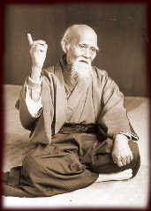

L'Aïkido, un art de paix
Art martial japonais traditionnel, l'Aïkido met en pratique une philosophie humaniste et universelle.
Son apprentissage vise à établir une situation de paix et d'harmonie à partir d'une situation de combat et d'agression.
Sa pratique rigoureuse sur le tatami constitue une véritable école de droiture, de respect et de non-violence, en accord avec les nécessités de notre société actuelle.
L'harmonie, l'équilibre et la rigueur de cet art martial contribuent à l'épanouissement physique, mental et relationnel de l'individu.
L'Aïkido est aussi bien adapté aux adultes qu'aux enfants et peut se pratiquer à tout âge. Aucune compétition n'est pratiquée.
